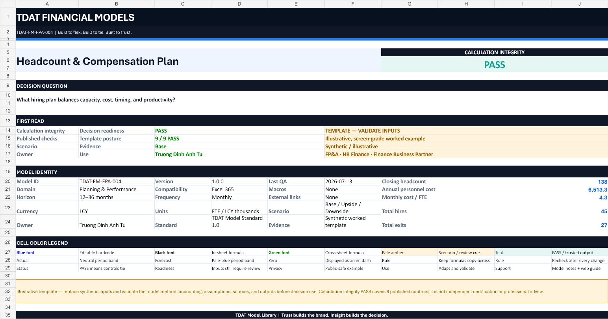
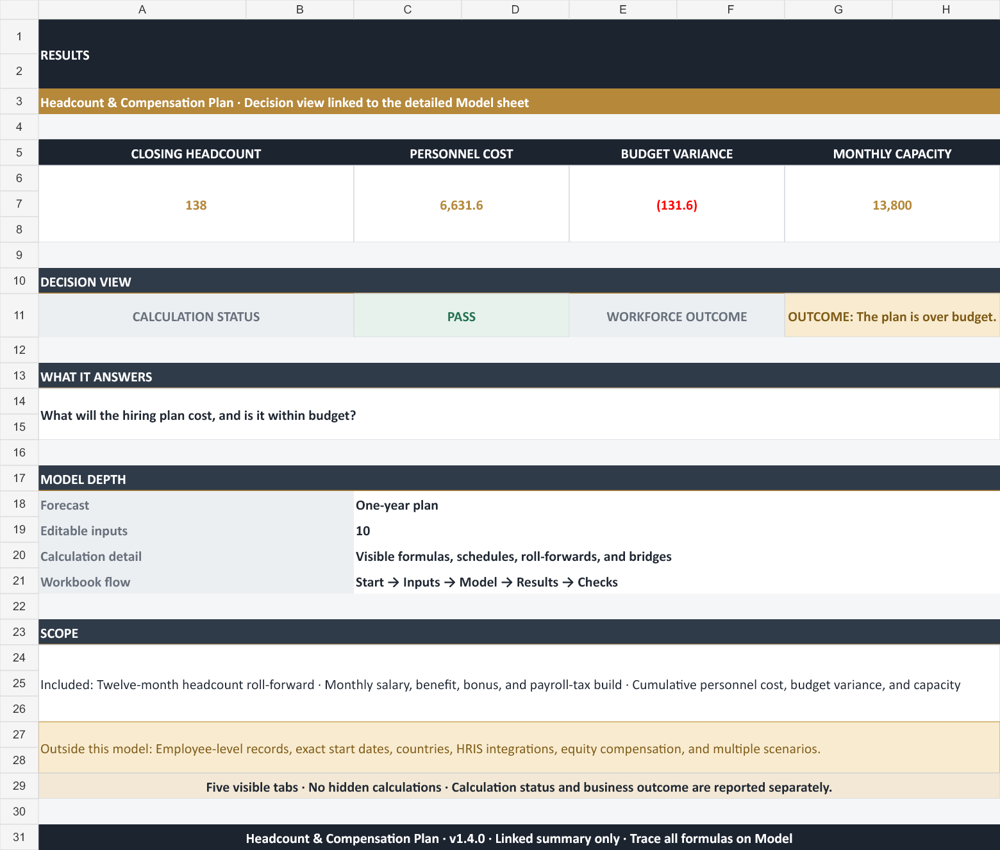
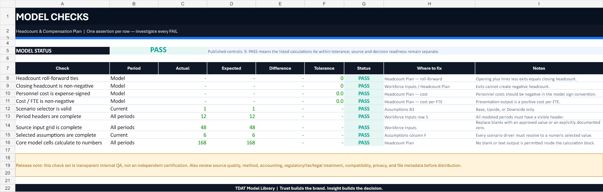

Available · TDAT-FM-FPA-004
Headcount & Compensation Plan
Opening headcount, hires, exits, start dates, compensation, benefits, vacancies, and scenario controls.
Calculation integrity PASS9 / 9 published checksMacro-freeNo external linksSynthetic example

Decision first
What hiring plan balances capacity, cost, timing, and productivity?
Confirm scope
Read Cover and Guide; confirm decision, roles, horizon, units, method, and exclusions.
Select a scenario
Choose Base, Upside, or Downside and challenge the visible driver rationale.
Replace blue inputs
Update synthetic source values and assumptions with approved, dated inputs.
Resolve Checks
Trace every FAIL to its source, assumption, schedule, definition, or sensitivity.
Workbook map
Nine visible sheets with a controlled input-to-decision flow.
- Cover: guidance, outputs, control, or release evidence
- Guide: guidance, outputs, control, or release evidence
- Assumptions: guidance, outputs, control, or release evidence
- Workforce Inputs: editable synthetic source inputs
- Headcount Plan: core finance mechanics
- Sensitivity: Hiring realization × Annual merit
- Summary: guidance, outputs, control, or release evidence
- Checks: 9 published controls
- Sources & Version: guidance, outputs, control, or release evidence
What moves the model
Model-specific mechanics stay visible and traceable.
Opening headcount
Formula-driven schedule linked to visible inputs and selected scenario assumptions.
Scenario hires
Formula-driven schedule linked to visible inputs and selected scenario assumptions.
Exits
Formula-driven schedule linked to visible inputs and selected scenario assumptions.
Closing headcount
Formula-driven schedule linked to visible inputs and selected scenario assumptions.
Average headcount
Formula-driven schedule linked to visible inputs and selected scenario assumptions.
Average annual salary / FTE
Formula-driven schedule linked to visible inputs and selected scenario assumptions.
Base pay
Formula-driven schedule linked to visible inputs and selected scenario assumptions.
Benefits
Formula-driven schedule linked to visible inputs and selected scenario assumptions.
Rendered from the released workbook
The web preview and download are the same build.


QA and release evidence
9 / 9 published checks PASS in the released synthetic case.
Published finance controls
- Headcount roll-forward ties: Opening plus hires less exits equals closing headcount.
- Closing headcount is non-negative: Exits cannot create negative headcount.
- Personnel cost is expense-signed: Personnel costs should be negative in the model sign convention.
- Cost / FTE is non-negative: Presentation output is a positive cost per FTE.
- Scenario selector is valid: Base, Upside, or Downside only.
- Period headers are complete: All modeled periods must have a visible header.
- Source input grid is complete: Replace blanks with an approved value or an explicitly documented zero.
- Selected assumptions are complete: Every scenario driver must resolve to a numeric selected value.
Distribution controls
- Macro-free .xlsx; no external workbook links or intentional circular references.
- Synthetic values; no real company, customer, employee, vendor, borrower, position, transaction, or household record.
- All 9 user-facing sheets were rendered for clipping and legibility review.
- Calculation integrity and decision readiness are deliberately separate.
SHA-256
258D96AF9463447E08ADE9E1946380AB1C974CE43A1A59E9A362EF530B6102F0Scope and responsibility
A reusable template is explicit about what it does not decide.
Included
Workforce plan, Personnel cost, Capacity; synthetic inputs; scenario control; formula-driven engine; sensitivity; summary; sources; and checks.
Deliberately excluded
employee-level payroll; country tax tables; equity compensation valuation; HRIS connection; personally identifiable employee data.
Usage note
Download, copy, and adapt for learning, interview cases, internal planning, or analysis. Do not resell an unchanged copy as your own product.
Professional responsibility
Validate every source, assumption, formula, method, accounting treatment, tax, legal/regulatory constraint, and suitability before real-world use. Provided without warranty.
Q&A
Questions to answer before using the output.
What should I replace first?
Replace blue cells on Workforce Inputs, then update scenario drivers on Assumptions.
How flexible is the template?
Add periods or source rows in the input layer, extend formulas and formats together, and add a reconciliation check back to Headcount Plan.
What does PASS mean?
All 9 published controls tie within tolerance. It does not validate the user's sources, policy, assumptions, method, or suitability.
Can I use the model with real data?
Yes, in an authorized private copy. Confirm privacy, confidentiality, source ownership, and distribution rules first.
Does it support Google Sheets or LibreOffice?
Not verified. Excel 365 is the supported target; retest formulas, charts, validations, and checks after conversion.
Is the template professional advice?
No. It is an educational analytical template and requires appropriate professional review before real-world use.